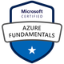

Certificações Microsoft
Esta página contém as informações sobre as certificações Microsoft.
-
 Certificação: Trainer
Certificação: Trainer
- Data de Expiração: 26 de dezembro de 2024 às 20:59 (UTC -03:00)
- Instituição: Microsoft
- Descrição: A certificação demonstra o conhecimento avançado em práticas de treinamento para plataformas Microsoft.
- Certificação: Microsoft Certified: Azure Developer Associate
- Data de Expiração: 20 de julho de 2025 às 20:59
- Instituição: Microsoft
- Descrição: A certificação demonstra o conhecimento avançado na criação e implementação de soluções no Azure.
-
 Certificação: Microsoft Certified: DevOps Engineer Expert
Certificação: Microsoft Certified: DevOps Engineer Expert
- Data de Expiração: 24 de agosto de 2025 às 20:59
- Instituição: Microsoft
- Descrição: A certificação comprova expertise em práticas DevOps e integração contínua.
- Certificação: Microsoft Certified: Identity and Access Administrator Associate
- Data de Expiração: 20 de setembro de 2025
- Instituição: Microsoft
- Descrição: A certificação comprova expertise em práticas de conformidade e segurança.
- Certificação: Microsoft Certified: Azure Administrator Associate
- Data de Expiração: 14 de outubro de 2025
- Instituição: Microsoft
- Descrição: A certificação comprova expertise em administração dos recursos em nuvem da Azure.
-
 Certificação: Microsoft Certified: Windows Server Hybrid Administrator Associate
Certificação: Microsoft Certified: Windows Server Hybrid Administrator Associate
- Data de Expiração: 2 de dezembro de 2025
- Instituição: Microsoft
- Descrição: Certificação que valida habilidades em gerenciar e implementar soluções híbridas com Windows Server, tanto on-premises quanto na nuvem.
- Certificação: Microsoft Certified: Azure Solutions Architect Expert
- Data de Expiração: 27 de fevereiro de 2026
- Instituição: Microsoft
- Descrição: Certificação que comprova expertise em projetar e implementar soluções em Azure, cobrindo aspectos de computação, rede, armazenamento e segurança.
-
 Certificação: Microsoft 365 Certified: Fundamentals
Certificação: Microsoft 365 Certified: Fundamentals
- Data de Expiração: Não expira
- Instituição: Microsoft
- Descrição: Certificação que valida o conhecimento básico dos serviços e conceitos do Microsoft 365, incluindo opções de licenciamento, nuvem e segurança.
-  Certificação: Microsoft Certified: Azure Fundamentals
- Data de Expiração: Não expira
- Instituição: Microsoft
- Descrição: Certificação que comprova o conhecimento básico sobre serviços de nuvem e os principais conceitos do Microsoft Azure.
- Certificação: Microsoft Certified: Security, Compliance, and Identity Fundamentals
- Data de Expiração: Não expira
- Instituição: Microsoft
- Descrição: Certificação que valida o conhecimento fundamental em segurança, conformidade e identidade em serviços de nuvem e Microsoft.
-
 Certificação: Microsoft® Certified Technology Specialist: Windows Server 2008 Network Infrastructure, Configuration
Certificação: Microsoft® Certified Technology Specialist: Windows Server 2008 Network Infrastructure, Configuration
- Data de Expiração: Não expira
- Instituição: Microsoft
- Descrição: Certificação que comprova as habilidades em configurar e gerenciar a infraestrutura de rede do Windows Server 2008.
-
Certificação: Microsoft Certified Professional
- Data de Expiração: Não expira
- Instituição: Microsoft
- Descrição: Certificação que reconhece a competência e o conhecimento técnico em tecnologias Microsoft.